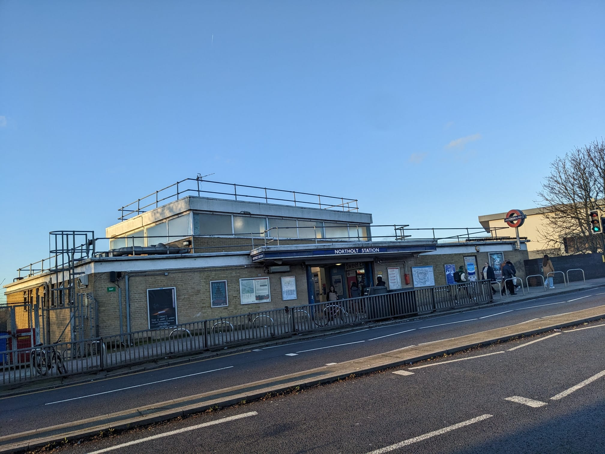
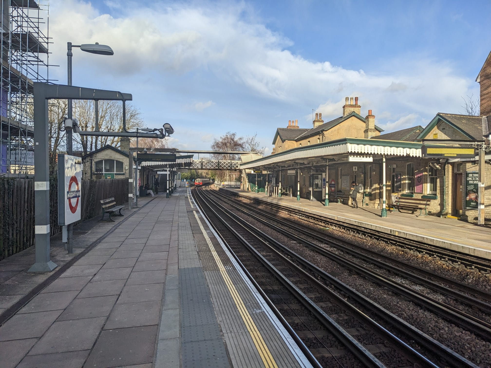
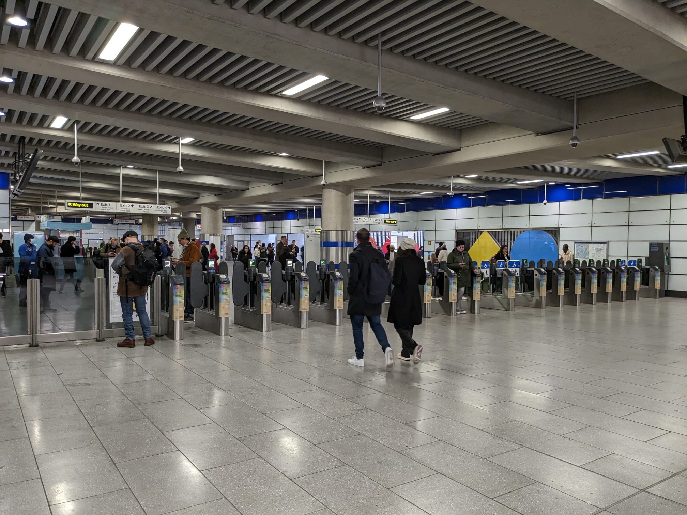

272 Underground Stations, randomly chosen, turned into podcasts, one at a time... it's a long-term project

What is Roundel Round We Go?
When Emily met Paul (in an underground station, of all places) she decided his ever-growing collection of books about the underground needed a use. So together, in the depths of a January lockdown, they came up with a concept for a podcast. Each episode, they'd pull the name of a station from a bag, research it, and create a show. Twenty-four shows in, with hunderdeds on listeners, they're not stopping any time soon!
Latest Episodes Listen to all our episodes on Anchor
Northolt
Woodside Park
Tottenham Court Road
